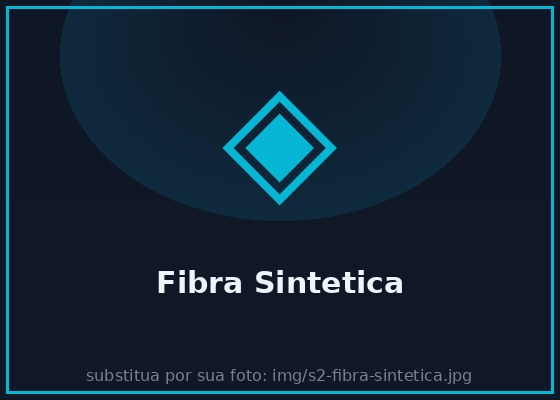
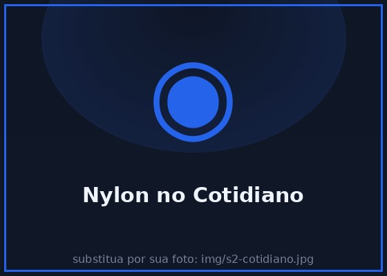
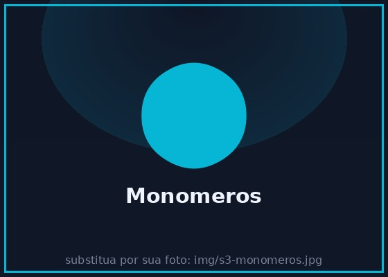
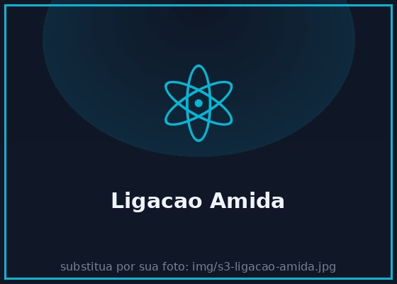
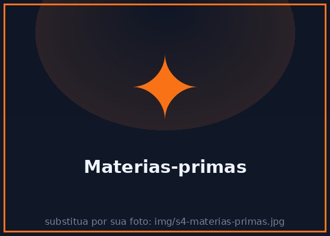
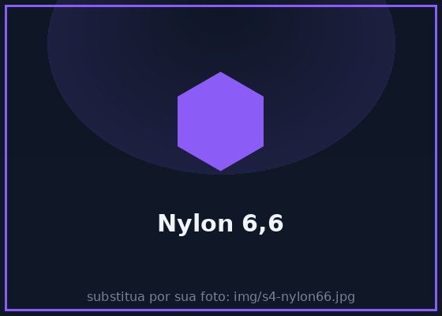
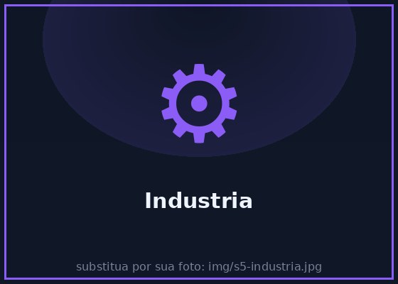
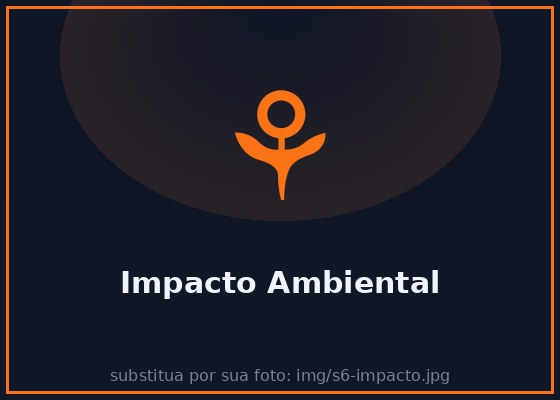
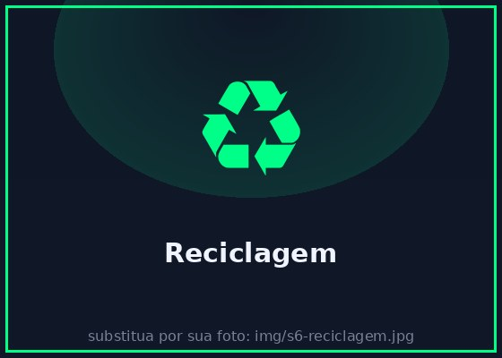

A química por trás de uma das fibras sintéticas mais utilizadas no mundo
Criada em laboratório, não existe na natureza
Ligações amida conectam suas unidades
Moléculas gigantes formadas por repetição
Presente em roupas, cordas, peças e mais
Cadeia polimérica do nylon

Fibra sintética é todo material fibroso produzido artificialmente pelo ser humano, utilizando compostos químicos — geralmente derivados do petróleo.
Diferente das fibras naturais (algodão, seda, lã), as fibras sintéticas não vêm de fontes naturais. O nylon foi a primeira fibra sintética comercialmente viável do mundo, criada em 1935 por Wallace Carothers na DuPont.
Entre as fibras sintéticas mais conhecidas estão: nylon (poliamida), poliéster, acrílico e elastano.
Poliamida é um tipo de polímero que contém ligações amida (—CONH—) em sua cadeia principal. Essas ligações são formadas pela reação entre um grupo carboxila (—COOH) e um grupo amina (—NH₂).
O nylon é a poliamida mais famosa. O nylon 6,6 é formado por 6 carbonos do ácido adípico e 6 carbonos da hexametilenodiamina.
As ligações de hidrogênio entre as cadeias de poliamida conferem ao nylon sua alta resistência e durabilidade.
As cadeias moleculares do nylon são formadas pela repetição de unidades de monômeros ligados covalentemente. Cada unidade se conecta à seguinte por uma ligação amida.
Quanto maior o número de unidades repetidas (maior o grau de polimerização), mais resistente e durável se torna o material.
As cadeias do nylon se alinham e formam ligações de hidrogênio entre si, criando uma estrutura cristalina que garante força e elasticidade.

O nylon está em tudo ao nosso redor:
Unidade básica — o "tijolo"
Cadeia de muitos monômeros
Processo de união
Polimerização por condensação: moléculas de água são liberadas

Monômeros são as pequenas moléculas que servem como "blocos de construção" dos polímeros. No caso do nylon 6,6, os dois monômeros são:
Ao se unirem, cada monômero perde parte de sua molécula (água) e forma uma ligação amida com o próximo.
Polímeros são macromoléculas formadas pela repetição de unidades de monômeros ligados por ligações covalentes.
A palavra vem do grego: poly = muitos + meros = partes.
O nylon pode ter milhares de unidades repetidas em uma única cadeia, formando um material com propriedades mecânicas impressionantes.
Na polimerização por condensação, os monômeros se unem e liberam uma pequena molécula como subproduto — geralmente água (H₂O).
Cada nova ligação amida formada elimina uma molécula de água. É por isso que o processo se chama "condensação".
Esse tipo de polimerização é diferente da polimerização por adição, onde nenhum subproduto é formado.

A ligação amida é formada pela reação entre o grupo carboxila (—COOH) e o grupo amina (—NH₂):
—COOH + H₂N— → —CONH— + H₂O
Essa ligação é forte e estável, e é responsável pela resistência do nylon. As ligações de hidrogênio entre as cadeias amida também contribuem para a elevada temperatura de fusão e a durabilidade do material.
Derivados do petróleo
Ácido adípico + Diamina
Condensação
Nylon 6,6 fundido
Extrusão + estiramento
Ligação amida —CONH—

O nylon é produzido a partir de derivados do petróleo. As duas matérias-primas principais são:
Isso significa que o nylon depende de recursos não renováveis e sua produção envolve alto consumo energético.
Após a polimerização, o nylon fundido é forçado através de furos microscópicos (spinneretes) formando filamentos contínuos.
Esses filamentos são então esticados (estirados) a frio, o que alinha as cadeias poliméricas e aumenta a resistência em até 4x.
O diâmetro dos fios pode variar de 0,05 mm a 1 mm, dependendo da aplicação desejada.

O nome nylon 6,6 indica o número de átomos de carbono em cada monômero:
Existe também o nylon 6, produzido a partir de um único monômero (caprolactama) com 6 carbonos, por polimerização por abertura de anel.
O nylon 6,6 tem maior resistência térmica que o nylon 6, pois possui mais ligações de hidrogênio entre as cadeias.
O nylon revolucionou a indústria têxtil. Suas principais vantagens no vestuário:
Em 1940, as meias-calças de nylon causaram furor nos EUA, vendendo 4 milhões de pares em 4 dias!

Na indústria, o nylon substitui metais em diversas aplicações:
O nylon é 6x mais leve que o aço e não enferruja!

Apesar dos impactos, o nylon continua essencial por sua resistência e versatilidade.

O nylon pode ser reciclado, mas o processo ainda é limitado:
Marcas como Patagonia e ECONYL já usam nylon reciclado de redes de pesca abandonadas.
A química verde é o caminho para manter os benefícios do nylon e reduzir seus impactos.
" A Química transforma moléculas em materiais que fazem parte do nosso cotidiano. "